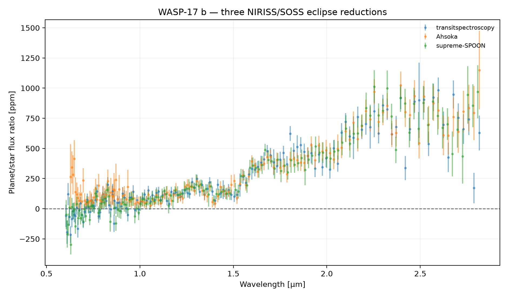
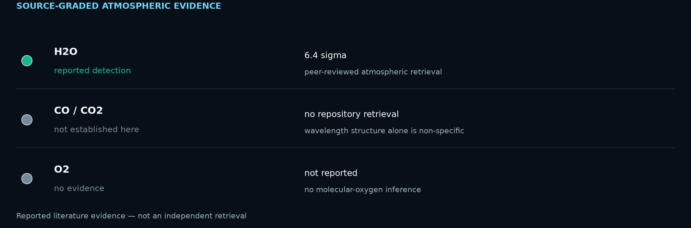

Data source notes
SHA-256, LF-normalised text
701a2cb553f53e71e3e48e508e4f40d9a01fde042cc948c69f33fa8e53306ac1Browse 15 versioned evidence files. Table previews simply display stored rows. Consult the project report for the source, processing steps, and inference assumptions.


701a2cb553f53e71e3e48e508e4f40d9a01fde042cc948c69f33fa8e53306ac1ad28ee34591429032cb068e4ba42f22c7f958fc325784880c3df484addf14a46| species | status | evidence | basis | source_label | source_url |
|---|---|---|---|---|---|
| H2O | reported detection | 6.4 sigma | peer-reviewed atmospheric retrieval | Gressier et al. 2025, JWST-TST DREAMS | https://doi.org/10.3847/1538-3881/ad97bf |
| CO / CO2 | not established here | no repository retrieval | wavelength structure alone is non-specific | Gressier et al. 2025, JWST-TST DREAMS | https://doi.org/10.3847/1538-3881/ad97bf |
| O2 | no evidence | not reported | no molecular-oxygen inference | Gressier et al. 2025, JWST-TST DREAMS | https://doi.org/10.3847/1538-3881/ad97bf |
f6fa9862f30dcec6b9cdf2c0d1c72257e0d97a9cbbdfb91681122c8cbe98edd0| pl_name | hostname | ra | dec | pl_orbper | pl_tranmid | pl_trandur |
|---|---|---|---|---|---|---|
| WASP-17 b | WASP-17 | 239.9622479 | -28.0617941 | 3.73543 | 2454592.80154 | 4.4232 |
6c4194811b359da83de360478ba46e280b6b062fc377375548eed988233318fa110b82c33046c716e86c09051e35bb1f55414f45f8a9122d3aaeecdcbf729aea4836a46e320309dd76860d9c09187fa179b012c7b1dd7dacf7b74a5d091c846482518db351fab231ad138f358427d4af44536dead1ca5717f01e5ed11418200b| quantity | value | unit |
|---|---|---|
| sector | 12 | TESS sector |
| period_days | 3.73543 | days; NASA Exoplanet Archive |
| published_duration_hours | 4.4232 | hours; NASA Exoplanet Archive |
| a_over_rstar | 7.43231409396 | fixed from saved a and stellar radius |
afda85838900efb3abff8f27d4f3dec640a72719388a32817b0698a7cd92bd5e| bins_below_1_micron | chi2 | comparison | dof | mean_ppm | median_error_ppm | n |
|---|---|---|---|---|---|---|
| 52 | 1916.5421937662575 | transitspectroscopy vs weighted flat | 154 | 165.0194603234298 | 58.45145909259286 | 155 |
| 48 | 1302.2603023098877 | Ahsoka vs weighted flat | 150 | 186.21213089281065 | 68.55648546979964 | 151 |
| 49 | 1562.3246214813926 | supreme-SPOON vs weighted flat | 151 | 147.41010940140046 | 63.00443980026565 | 152 |
3e03d76b2b950c923a6bd6d5c441bf8144fa768031c1c850c69777a15621c378| sector | filename | transit_events | n_points | transit_supported | delta_bic | timing_shift_hours |
|---|---|---|---|---|---|---|
| 12 | tess2019140104343-s0012-0000000066818296-0144-s_lc.fits | 6 | 4044 | True | 30092.46345 | 1.444394973 |
| 38 | tess2021118034608-s0038-0000000066818296-0209-s_lc.fits | 7 | 5564 | True | 39461.24364 | 1.694508233 |
a200bf9c087ca38f4932d34585ed1663f98f7c033146c254394300882e86be5e| fraction_abs_independence_z_gt_2 | median_abs_independence_z | median_absolute_difference_ppm | median_difference_ppm | n_overlap | pair | rms_difference_ppm |
|---|---|---|---|---|---|---|
| 0.059602649006622516 | 0.6821688766917021 | 61.53050658201106 | -6.9314417574283596 | 151 | transitspectroscopy - Ahsoka | 140.70381889663344 |
| 0.032679738562091505 | 0.48077753441214277 | 41.89058559978856 | 11.262050640399835 | 153 | transitspectroscopy - supreme-SPOON | 114.27627017254305 |
| 0.03333333333333333 | 0.4207874845931073 | 41.65038891458922 | 20.182532898756477 | 150 | Ahsoka - supreme-SPOON | 111.22508969486643 |
befe76f321746d566fda2d6bbf0c9a5cbd087e0f67753c30e4b55f2062a0fd8f69057e64be0dde745ad4c5581add74004df0e8a4feb9dbe99e52ca2d87253cbc58604752ca348567d45f412ae6c835e413fd5f3c90eda81aaba4f36cbe27b2c905040f1949bfc871fbc84517dfa1d1f339b06772d4728b7f9f94b51fc64f11a8f0dd9c18d579e434ad124b452f56d7bc4058af4619996ebe716e2cf6c235132dSHA-256 values verify the stored files. They do not independently validate the scientific analysis. Rebuild this page with python scripts/evidence_catalog.py followed by python scripts/render_evidence_page.py.